Aprendizado por Reforço
Introducção ao aprendizado por Reforço
https://www.youtube.com/watch?v=TtfQlkGwE2UO que torna o Aprendizado por Reforço diferente?
Um paradigma de aprendizado em que um agente aprende interagindo com o ambiente, buscando maximizar recompensas ao longo do tempo.
- Não há supervisor, apenas um sinal de recompensa
- Aprender com a experiência e os dados para tomar boas decisões em situações de incerteza
- O tempo importa: dados sequenciais
- As ações influenciam os dados futuros recebidos
Ausência de Supervisor
Diferentemente do aprendizado supervisionado, não existem respostas corretas fornecidas durante o treinamento.
- O agente explora o ambiente
- Aprende por tentativa e erro
- Descobre estratégias sozinho
- Busca maximizar recompensas acumuladas
Aplicações de Sucesso
-
Eficaz em tarefas de controle.
- Manobras acrobáticas com helicópteros
- Vitória contra campeões mundiais de Backgammon
- Gestão de portfólios financeiros
- Controle de usinas de energia
- Jogando Atari melhor que humanos
Exemplos - controle


Exemplos - aplicações - 1
https://openai.com/index/chatgpt/
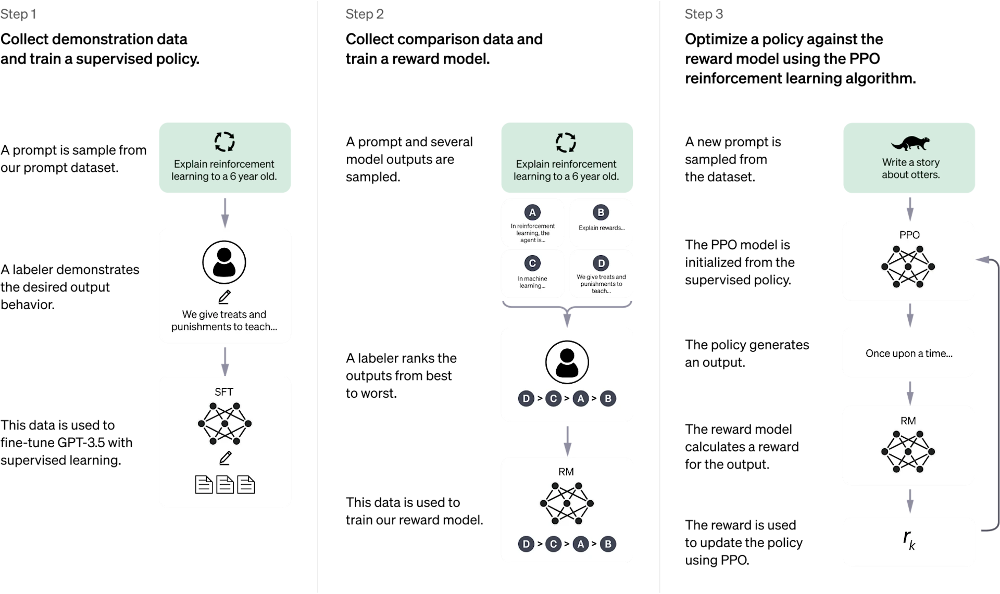
Exemplos - aplicações - 2
Recompensa
- Uma recompensa \(R_t\) é um sinal escalar de feedback
- Indica quão bem o agente está se saindo no instante \(t\)
- Fornece uma medida imediata de desempenho
- O trabalho do agente é maximizar a recompensa cumulativa
- Busca maximizar o retorno ao longo do tempo
O Aprendizado por Reforço é baseado na hipótese da recompensa.
Definição: todos os objetivos podem ser descritos pela maximização da recompensa cumulativa esperada.
Exemplos de recompensas
Diferentes tarefas utilizam recompensas específicas para guiar o aprendizado.
- Jogos: recompensa por vitória; penalidade por derrota
- Portfólio: recompensa para cada dólar acumulado
- Usina: recompensa por gerar energia; penalidade por exceder limites de segurança
- Robô humanoide: recompensa por movimento à frente; penalidade por cair
- Atari: recompensa por aumentar a pontuação; penalidade por reduzi-la
Ausência de exemplos do comportamento desejado - não há dados disponíveis para uma tarefa.
Problemas de otimização de grande complexidade com resultados demorados
Sequential Decision Making
Objetivo: selecionar ações para maximizar a recompensa total futura.
- Ações podem ter consequências de longo prazo
- A recompensa pode ser atrasada
- Pode ser melhor sacrificar recompensa imediata, em busca de maior recompensa no longo prazo
- Investimentos: podem levar meses para amadurecer
- Reabastecimento: pode evitar um acidente horas depois
- Jogos: bloquear movimentos pode aumentar as chances de vitória
Agentes
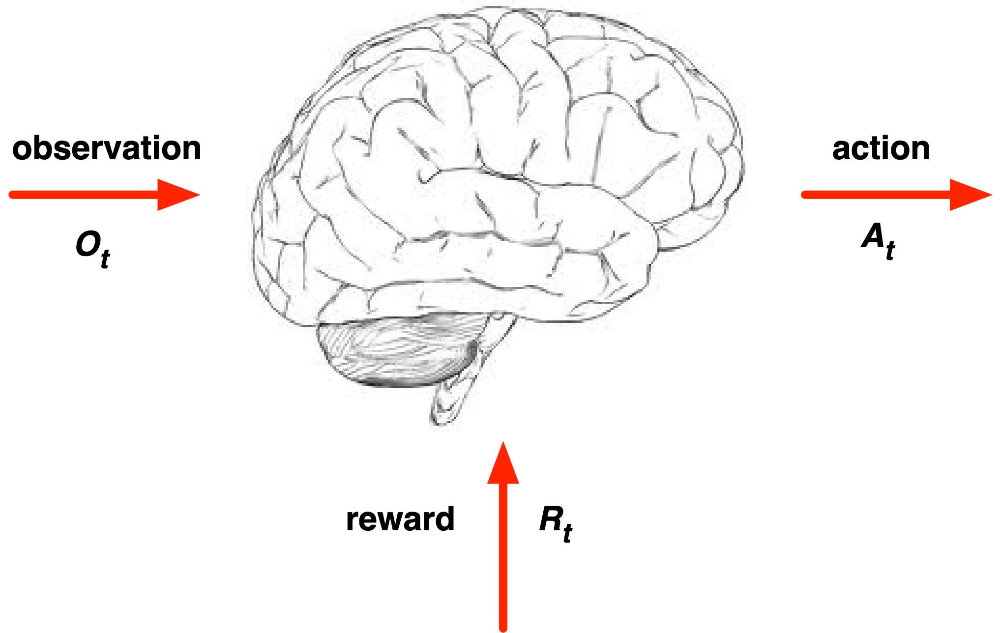
Interação Agente-Ambiente
A cada passo \(t \), agente e ambiente interagem continuamente.
- executa a ação \(A_t \)
- recebe a observação \(O_t \)
- recebe a recompensa escala \(R_t \)
- recebe a ação \(A_t \)
- emite a observação \(O_{t+1} \)
- emite a recompensa escalar \(R_{t+1} \)
- Agente:
- Ambiente:
O tempo avança a cada passo do ambiente \(t = t+1\)
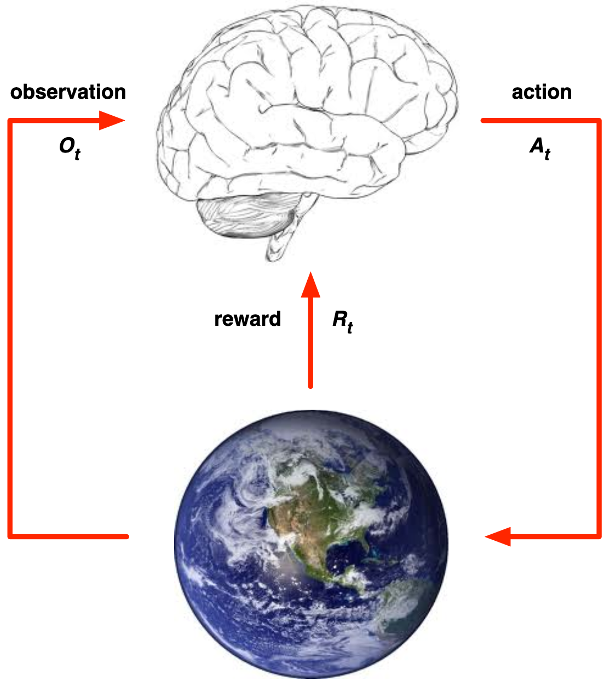
Histórico e estado
O histórico é a sequência de observações, ações e recompensas até o instante \(t\).
\( H_t = O_1,R_1,A_1,...,A_{t-1},O_t,R_t \)
- Fluxo sensório-motor de um agente ou robô
- O próximo passo depende do histórico
- O agente escolhe ações
- O ambiente gera observações e recompensas
- Estado é a informação usada para determinar o que acontece em seguida
- Formalmente: \[ S_t =f(H_t) \]
Environment State
- O estado do ambiente \(S^{e}_{t} \) é a representação interna do ambiente.
- Contém os dados usados para gerar a próxima observação e recompensa
- Normalmente não é visível ao agente
- Pode ser uma representação privada do ambiente
- Mesmo quando observável, pode conter informações irrelevantes
- Pode ser qualquer função de história: \( S_{t}^{a} =f(H_t) \)
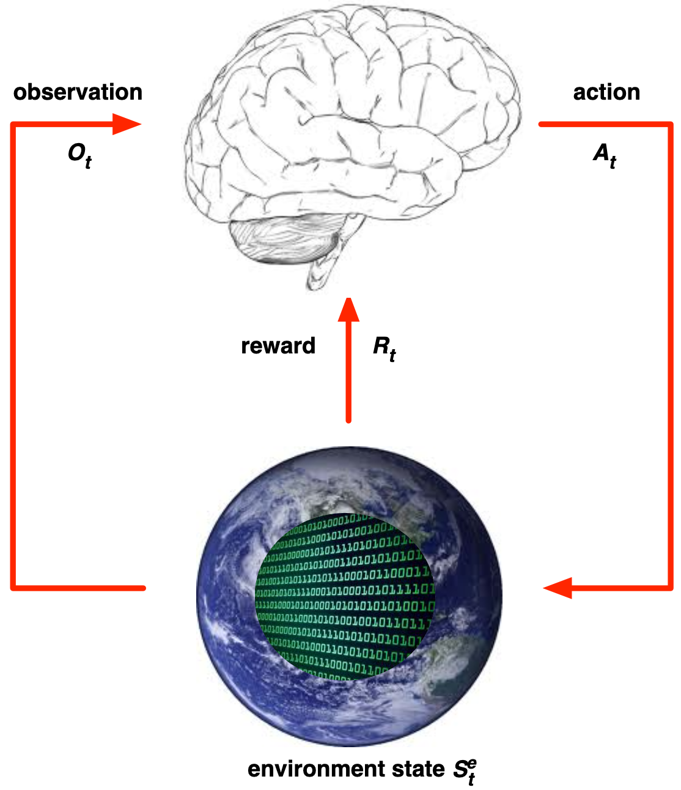
Informação de estado
Supondo que seja um Processo de decisão de Markov- Simplifica o problema - pode ser resolvido se incluirmos um pouco do histórico como parte do estado
- Um estado de informação contém toda a informação útil do histórico \(s_t = o_t \).
\( \mathbb{P}[S_{t+1}|S_t] = \mathbb{P}[S_{t+1}|S1,...,S_t] \)
- O futuro é independente do passado dado o presente \( H_{1:t} \to S_t \to H_{t+1:\inf} \)
- Conhecido o estado, o histórico pode ser descartado
- O estado é uma estatística suficiente do futuro
Ambientes totalmente vs parcialmente observáveis
- Ambientes totalmente observáveis:
- Estado do agente = Estado do ambiente = Estado da informação
- Formalmente: Markov Decision Process (MDP)
- parcialmente observáveis
- Formalmente: Partially Observable Markov Decision Process (POMDP)
- O agente deve construir sua própria representação de estado
Principais Componentes de um Agente de RL
- Um agente de Aprendizado por Reforço pode incluir um ou mais destes componentes.
- Política: função de comportamento do agente
- Função de valor de estado: quão bom é cada estado e/ou ação
- Modelo: representação do ambiente pelo agente
Política
- A política define o comportamento do agente.
- É um mapeamento de estado para ação:
- determinística: \(a=\pi(s)\)
- estocástica: \(\pi(a|s) = \mathbb{P}[A_t = a|S_t=s]\)
Função de valor de estado
-
É uma predição da recompensa futura.
- Avalia o quão bom ou ruim é um estado
- Ajuda a comparar e selecionar ações
Modelo
-
O modelo busca estimar o que o ambiente fará a seguir.
- \(P\) prevê o próximo estado
- \(R\) prevê a recompensa imediata
- Captura a dinâmica do ambiente
\(R^a_s = \mathbb{E}[R_{t+1} | S_t=S, A_t=a ] \)
Exemplo - labirinto
- recompensas: -1 por intervalo de tempo
- ações: Cima, baixo, esquerda, direita
- estados: localização do agente
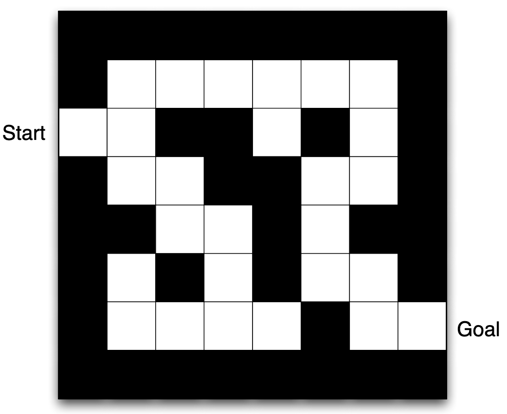
Exemplo - política e função de valor de estado
- As setas representam a política \(\pi(s)\) para cada estado \(s\)
- Os valores representam \(v_\pi(s)\) para cada estado \(s\)
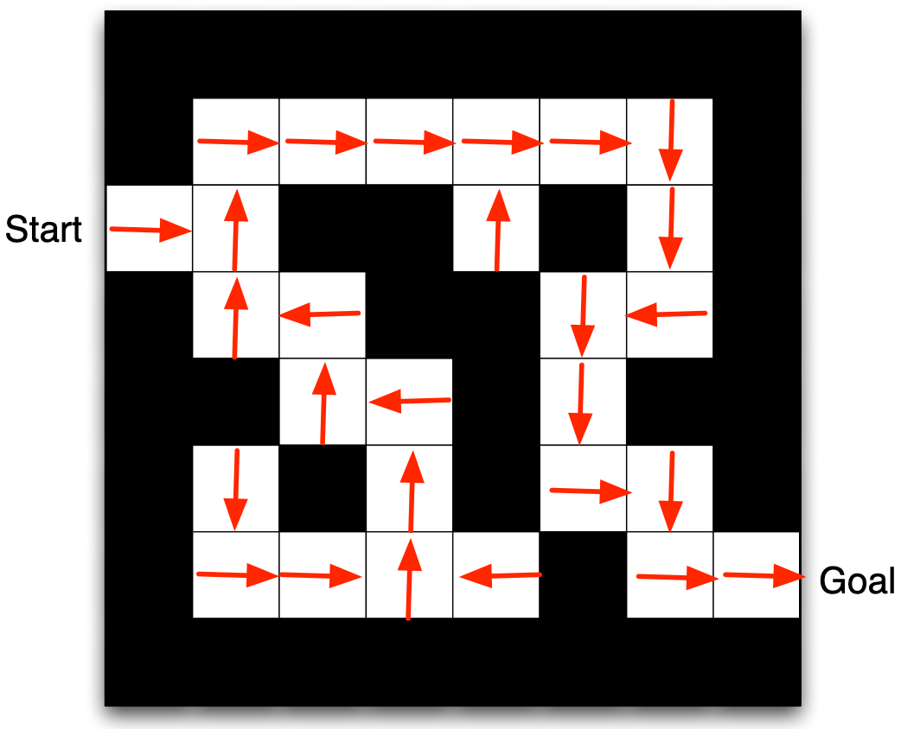
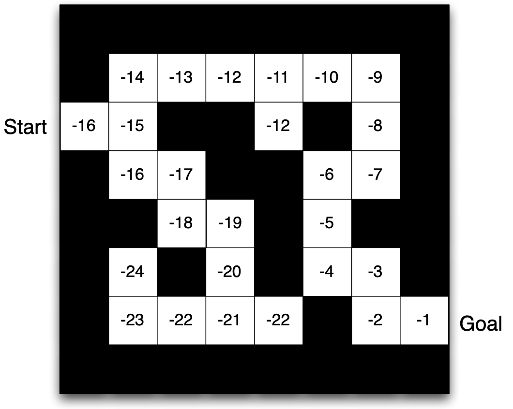
Exemplo - labirinto: modelo
- O agente pode ter um modelo interno do ambiente
- Dinâmica: como as ações alteram o estado
- Recompensas: qual a recompensa de cada estado
- O modelo pode ser imperfeito
- O layout representa o modelo de transições: \(P^a_{ss'} \)
- Os números representam o Reforço imediato \(R^a_s \) para cada estado \(s\) (o mesmo para cada \(a \) )
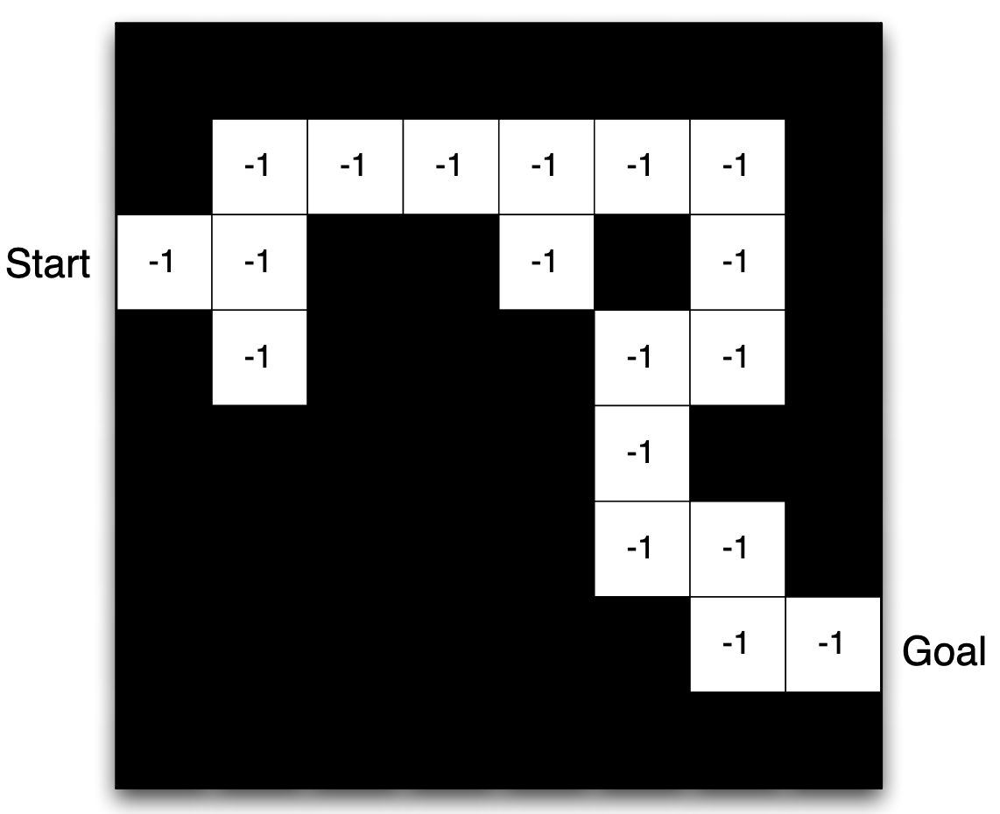
Categorizando Agentes de RL
Agentes de RL podem ser classificados de acordo com os componentes que utilizam.
- Baseado apenas em função de valor de estado
- Não possui política explícita
- Baseado apenas em política:
- Não utiliza função de valor de estado
- Actor-Critic: combina política e função de valor de estado
Outra forma de classificação é baseada no uso de modelo do ambiente.
- Livre de modelo:
- Usa política e/ou value function diretamente
- Baseado em modelo: utiliza modelo do ambiente
- Pode usar política e/ou função de valor de estado junto com o model
Aprendizado e Planejamento
Dois problemas fundamentais na tomada de decisão sequencial.
- Aprendizado:
- ambiente é inicialmente desconhecido
- O agente interage com o ambiente e melhora sua política
- Planejamento:
- um modelo do ambiente é conhecido
- O agente realiza computações com o modelo (sem interação externa) e melhora sua política outros nomes: Deliberação, Raciocínio, Introspecção, Reflexão, Pensamento, Busca
Exemplo: ação
- Regras do jogo são consideradas como desconhecidas
- Aprende diretamente da interação com o jogo
- Faça uma ação, veja a imagem e os pontos
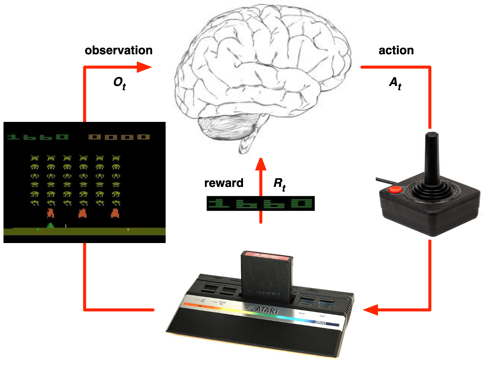
Exemplo: planejamento
-
O agente usa um modelo conhecido do ambiente para simular o futuro.
- As regras do jogo são conhecidas
- É possível consultar o emulador
- Existe um modelo perfeito dentro do “cérebro” do agente
- Se o agante toma a ação \(a\) no estado \(s\):
- qual será o próximo estado?
- qual será a pontuação?
- o agente pode planejar à frente para encontrar a política ótima
- busca em árvore
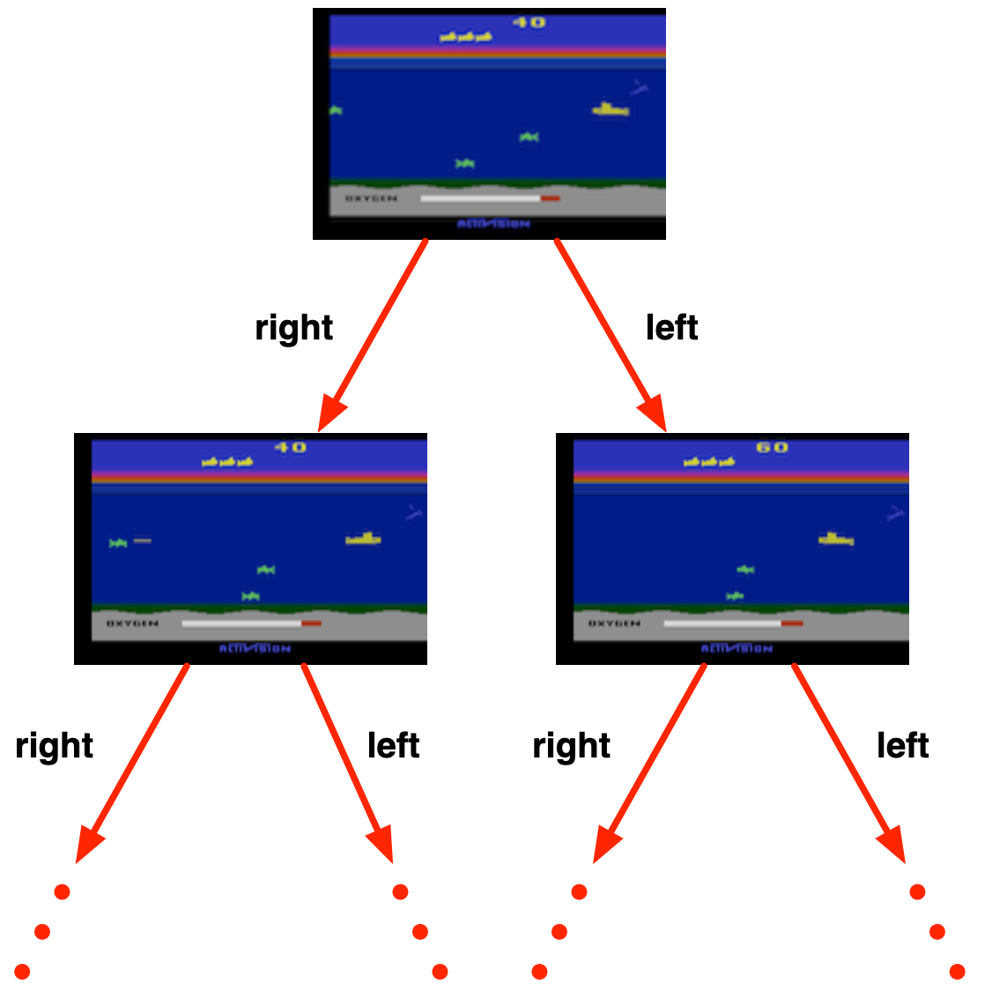
Exploração
Um algoritmo pode focar em buscar mais informações sobre o ambiente ou otimizar a informação conhecida para maximar a recompensa- Ir ao restaurante favorito
- Experimentar um restaurante novo
- Fazer a melhor jogada
- Tentar uma jogada diferente
Escolha de restaurante
Jogos
Predição e controle
- availar o futuro dado uma política
- otimizar uma política para achar a melhor
Predição
Controle
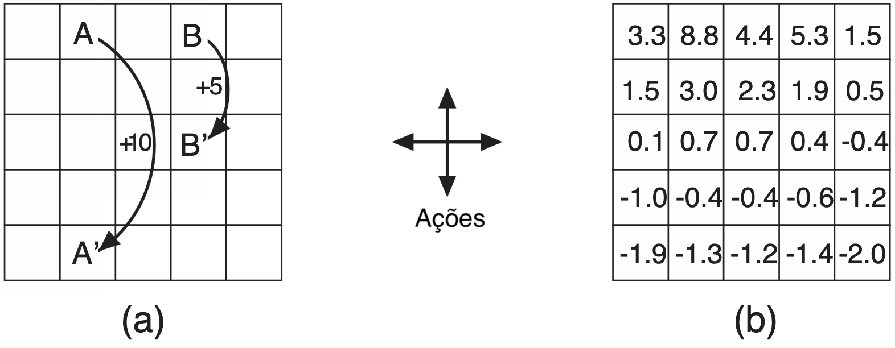
Aprendizado por Reforço
Processos de Decisão de Markov
Introdução aos MDPs
Processos de Decisão de Markov descrevem formalmente um ambiente para aprendizado por reforço.
- O ambiente é totalmente observável
- O estado atual caracteriza completamente o processo
- Quase todos os problemas de RL podem ser formulados como MDPs
- Controle ótimo trata principalmente de MDPs contínuos
- Problemas parcialmente observáveis podem ser convertidos em MDPs
Propriedade de Markov
O futuro é independente do passado dado o presente.
\( \mathbb{P}[S_{t+1}|S_t] = \mathbb{P}[S_{t+1}|S1,...,S_t] \)
- Um estado é Markov se satisfaz essa propriedade
- O estado captura toda a informação relevante do histórico
- Uma vez conhecido o estado, o histórico pode ser descartado
- O estado é uma estatística suficiente do futuro
Matriz de Transição de Estados
Para um estado de Markov s e um estado sucessor s′, a probabilidade de transição é definida por:\(P_{ss'} = \mathbb{P}[S_{t+1}=s' |S_t=S] \)
- A matriz P reúne todas as probabilidades de transição
- Cada elemento representa a transição de s para s′
- Linhas correspondem ao estado atual
- Colunas correspondem ao próximo estado
- A soma dos elementos de cada linha é igual a 1
Processo de Markov
Um Processo de Markov é um processo aleatório sem memória, composto por uma sequência de estados aleatórios.
- Também é chamado de Cadeia de Markov
- É definido pela tupla ⟨S, P⟩
- S é o conjunto finito de estados
- P é a matriz de probabilidades de transição
Episódios de Exemplo
Sequências geradas pela Cadeia de Markov do estudante, iniciando em S1 = C1.
- C1 → C2 → C3 → Pass → Sleep
- C1 → FB → FB → C1 → C2 → Sleep
- C1 → C2 → C3 → Pub → C2 → C3 → Pass → Sleep
- C1 → FB → FB → C1 → C2 → C3 → Pub → C1 → FB → FB
- FB → C1 → C2 → C3 → Pub → C2 → Sleep
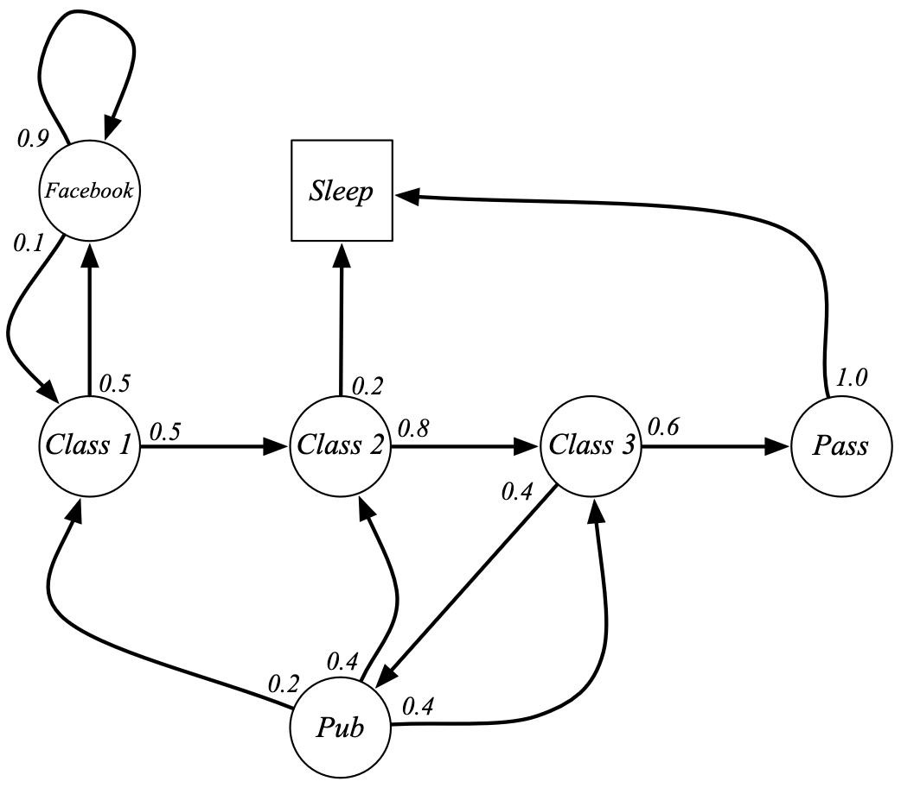
Matriz de transições
\[ P = \begin{array}{c|ccccccc} & C1 & C2 & C3 & Pass & Pub & FB & Sleep \\ \hline C1 & 0 & 0.5 & 0 & 0 & 0 & 0.5 & 0 \\ C2 & 0 & 0 & 0.8 & 0 & 0 & 0 & 0.2 \\ C3 & 0 & 0 & 0 & 0.6 & 0.4 & 0 & 0 \\ Pass & 0 & 0 & 0 & 0 & 0 & 0 & 1.0 \\ Pub & 0.2 & 0.4 & 0.4 & 0 & 0 & 0 & 0 \\ FB & 0.1 & 0 & 0 & 0 & 0 & 0.9 & 0 \\ Sleep & 0 & 0 & 0 & 0 & 0 & 0 & 1.0 \end{array} \]Processo de recompensa de Markov
Um Processo de Recompensa de Markov é uma Cadeia de Markov com recompensas.
- É definido pela tupla ⟨S, P, R, γ⟩
- S é o conjunto finito de estados
- P é a matriz de probabilidades de transição
- R é a função de recompensa
- Perto de 0, leva a uma avalição "curta"
- Perto de 1, leva a uma avalição "longa"
Por que usar desconto?
A maioria dos Processos de Recompensa e Decisão de Markov utiliza fator de desconto.
- Torna a formulação matemática mais conveniente
- Evita retornos infinitos em processos cíclicos
- Incertezas futuras podem não estar totalmente representadas
- Recompensas imediatas podem gerar mais retorno
- Humanos e animais preferem recompensas imediatas
- É possível usar γ = 1 quando todos os episódios terminam
Recompensa Amostrais do estudante - MRP
\(G_1 = R_2 + \gamma R_3 + \cdots + \gamma^{T-2} R_T\)
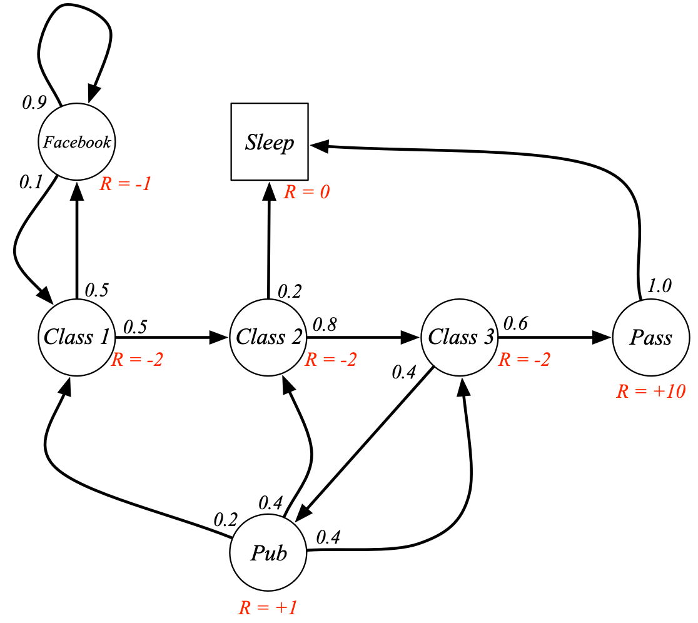
Supondo \(\gamma = 1/2\)
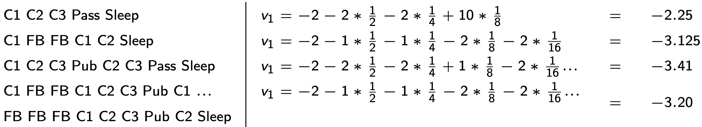
Bellman Equation (MRP)
Decomposição fundamental do valor em MRPs.
\(v(s) = \mathbb{E}[R_{t+1} + \gamma v(S_{t+1}) \mid S_t = s]\)
\(v(s) = R_s + \gamma \sum_{s'} P_{ss'} v(s')\)
Complexidade Computacional
Resolver diretamente não escala bem.
- Complexidade: \(O(n^3)\)
- Bom apenas para MRPs pequenos
- Para grandes problemas: métodos iterativos
An Introduction to Reinforcement Learning, Sutton and Barto, 1998 - http://webdocs.cs.ualberta.ca/∼sutton/book/the-book.html
Algorithms for Reinforcement Learning, Szepesvari Morgan and Claypool, 2010 - http://www.ualberta.ca/∼szepesva/papers/RLAlgsInMDPs.pdfReferências
https://medium.com/@jer_zhang/a-survey-of-reinforcement-learning-techniques-for-2d-and-3d-bipedal-locomotion-2f82f455396a
https://davidstarsilver.wordpress.com/wp-content/uploads/2025/04/intro_rl.pdf
https://web.stanford.edu/class/cs234/modules.html